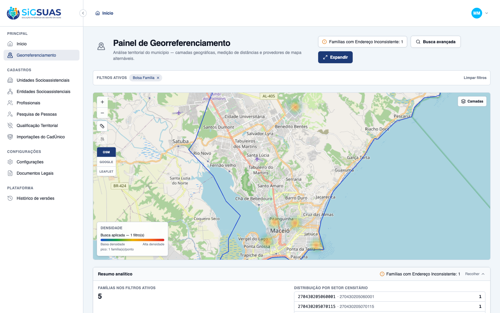
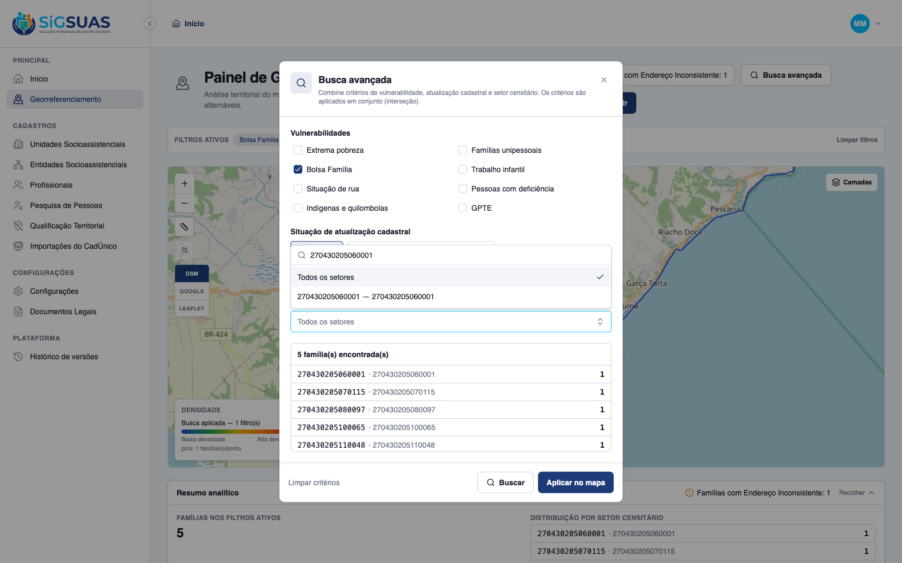
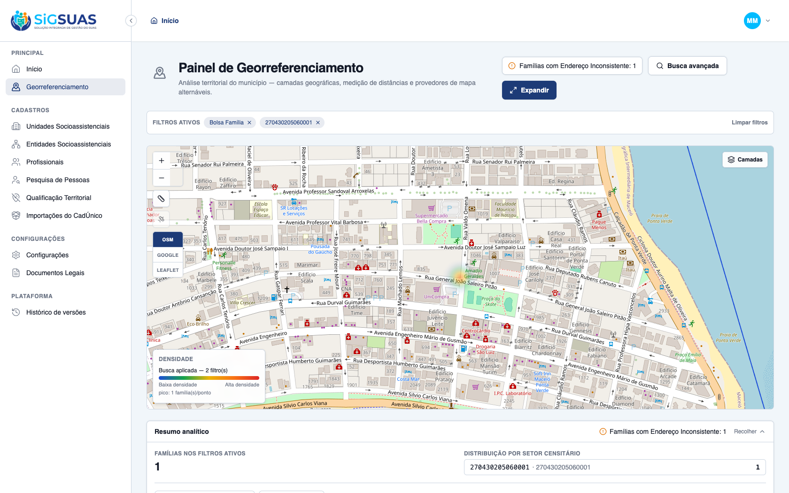
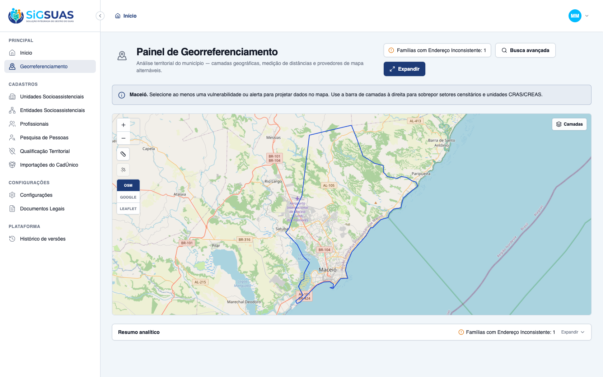

Os 3 critérios de aceite da HU #9865 sobre o resumo por unidade territorial (setor censitário) e a busca de território foram verificados dirigindo o app real no navegador (tenant Maceió Geo) e reforçados pela suíte automatizada — todos ATENDIDOS. CA06: com um filtro de vulnerabilidade aplicado (Bolsa Família, 5 famílias) e as manchas de calor no mapa, o painel lateral (Resumo analítico → “Distribuição por setor censitário”) lista os códigos das Unidades Territoriais com as respectivas contagens de famílias afetadas. CA07: pesquisando e selecionando o código de um setor específico (270430205060001) na barra de pesquisa do mapa (combobox “Setor censitário”, busca por código IBGE), o mapa foca automaticamente no perímetro desse setor e o resumo passa a exibir apenas a linha e os indicadores dessa unidade territorial (Famílias nos filtros ativos: 1, um único setor na distribuição). CA08: a métrica fixa “Famílias com Endereço Inconsistente: 1” é exibida de forma permanente no cabeçalho e na faixa de resumo, indicando a volumetria total do município (RN07). Cobertura automatizada: Vitest do GeoPanelSectorCombobox (16 testes) + Pest de geo (agregação por setor, restrição/validação de setor RN08, indicador fixo RN07).
| CA | Critério | Status |
|---|---|---|
| CA06 | Atualização estatística por Setor Censitário | ATENDIDO · navegador |
| CA07 | Isolamento de dados por busca de Setor Censitário | ATENDIDO · navegador |
| CA08 | Visibilidade de endereços inconsistentes (métrica fixa RN07) | ATENDIDO · navegador |
Critério (Gherkin): Dado que apliquei um filtro de vulnerabilidade, Quando as manchas de calor aparecem no mapa, Então o painel lateral exibe os códigos das Unidades Territoriais (Setores Censitários) com suas respectivas contagens de famílias afetadas.
Como foi testado: Aplicado o filtro Bolsa Família (5 famílias) na Busca avançada e expandida a faixa Resumo analítico na parte inferior do painel, com as manchas de calor projetadas no mapa.

Critério (Gherkin): Dado que pesquiso e seleciono o código de um setor censitário específico na barra de pesquisa do mapa, Quando a ação é processada, Então o mapa foca automaticamente no perímetro desse setor e o painel lateral de resumos passa a exibir apenas a linha e os indicadores estatísticos dessa unidade territorial.
Como foi testado: No campo Setor censitário da Busca avançada (combobox “Pesquisar por código IBGE ou nome…”), digitado e selecionado o código 270430205060001; em seguida Buscar → Aplicar no mapa.


Critério (Gherkin): Dado que o painel de georreferenciamento está aberto, Quando olho para os indicadores laterais, Então visualizo de forma fixa a métrica "Famílias com Endereço Inconsistente: X", indicando a volumetria total do município.
Como foi testado: Observado o cabeçalho e a faixa de Resumo analítico do painel, em qualquer estado (neutro ou com filtro aplicado).

=== frontend: combobox test (se houver) ===
RUN v2.1.9 /Users/paulosoares/Projetos/esuas-all/client
✓ src/modules/geo-panel/components/GeoPanelSectorCombobox.test.ts (16 tests) 55ms
Test Files 1 passed (1)
Tests 16 passed (16)
Start at 05:32:01
Duration 694ms (transform 80ms, setup 11ms, collect 149ms, tests 55ms, environment 268ms, prepare 43ms)
=== backend: agregação por setor, restrição de setor (RN08) e indicador fixo (RN07) ===
✓ it restricts by sector_uuid (SQLite fallback: sector city = family… 0.02s
✓ it aggregates by sector, groups anonymous points and computes the b… 0.02s
✓ it scopes every aggregate to the given tenant (RN01) 0.02s
✓ it validates that a sector belongs to the tenant municipality (RN08… 0.01s
✓ it serves the census sectors of the tenant municipality as a GeoJSO… 0.02s
✓ it rejects a sector_uuid that belongs to another municipality (RN08… 0.02s
✓ it always includes the fixed RN07 indicator in the summary, even wi… 0.03s
✓ it aggregates the summary by census sector under the active filters… 0.03s
Tests: 34 passed (101 assertions)